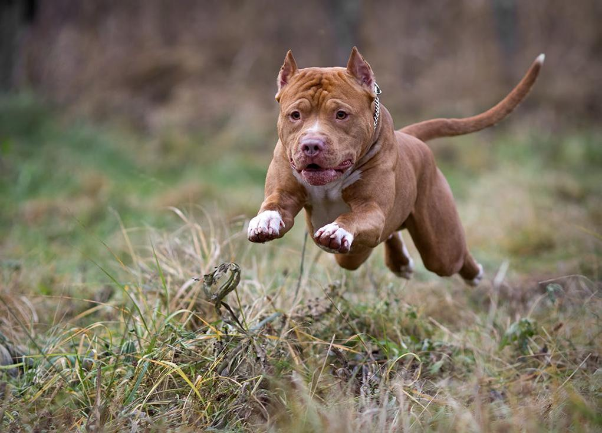
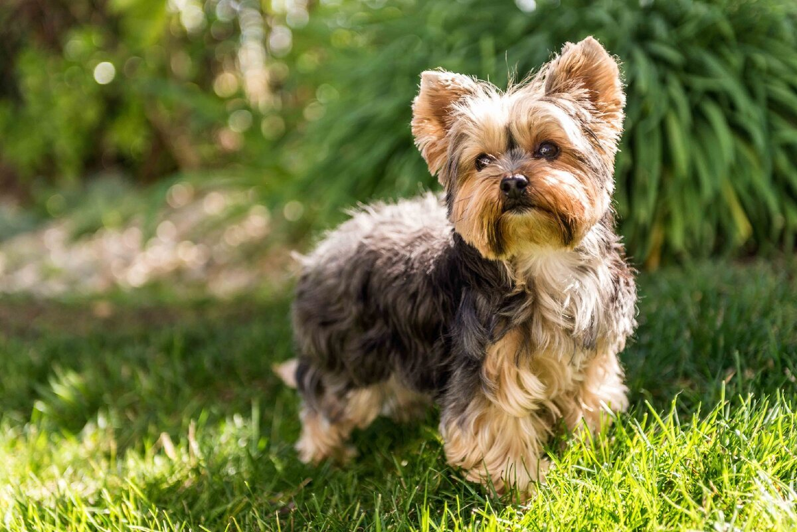
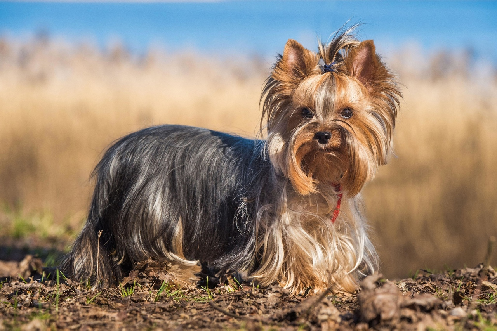
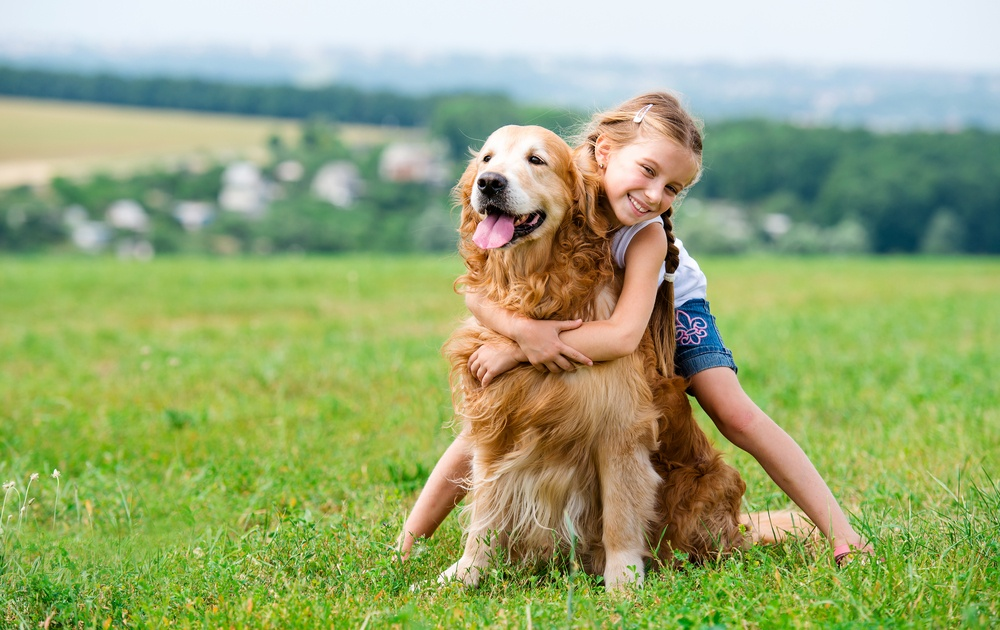
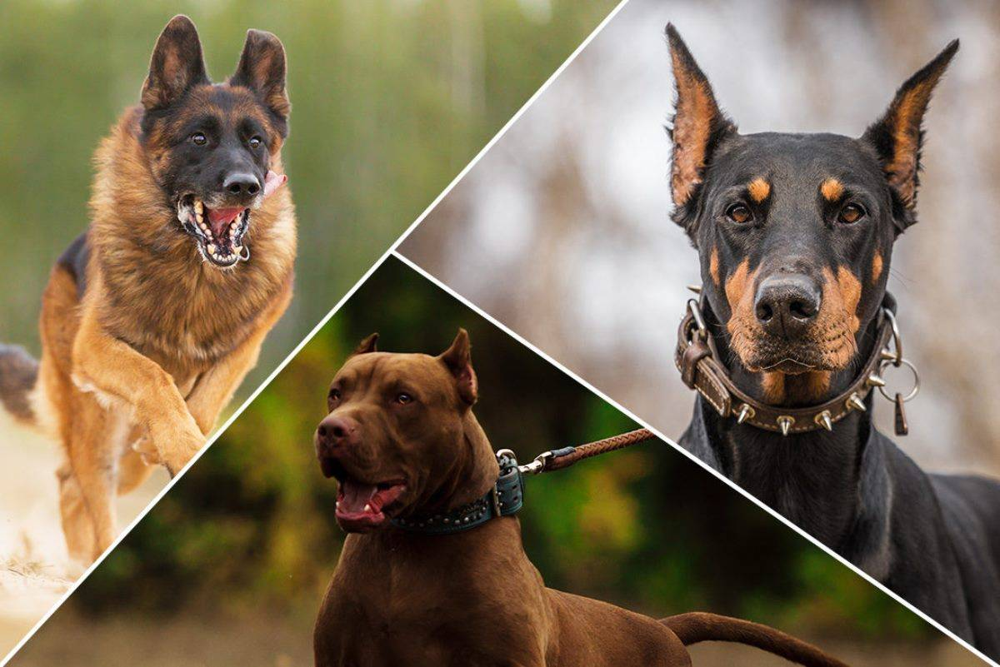
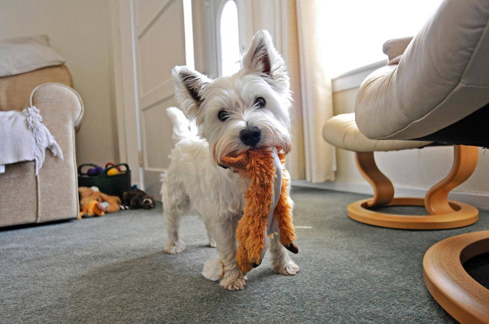
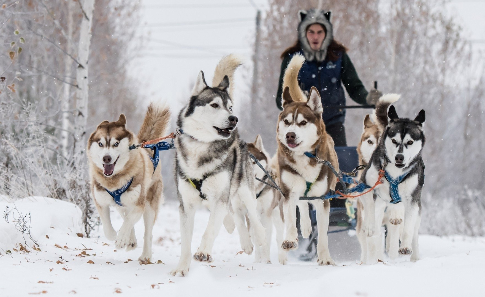
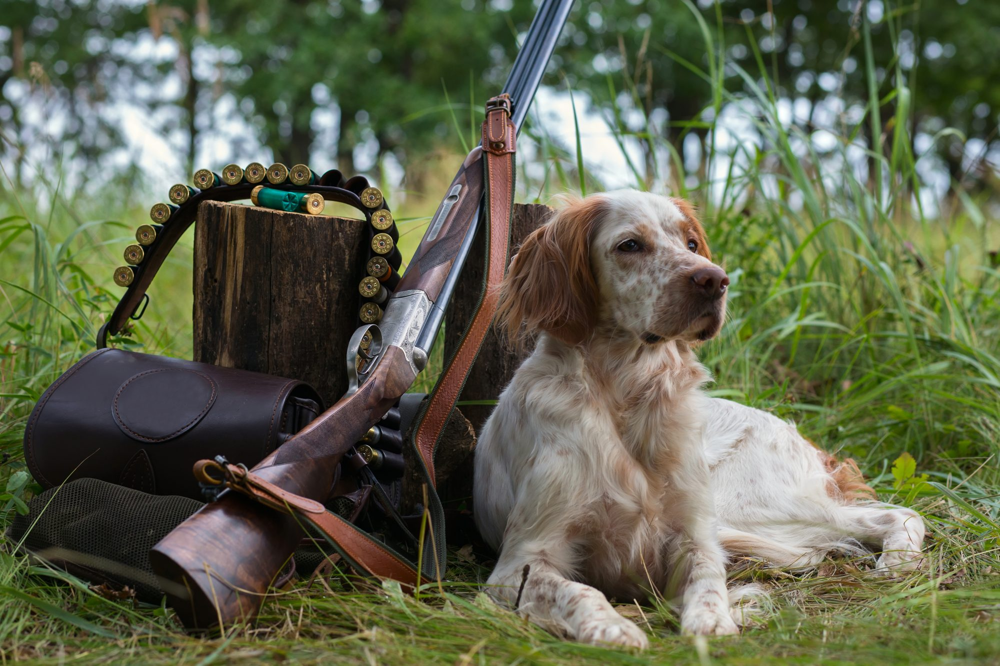

Породы собак
Если вы ищете какую-то породу – вы найдете ее у нас! Представлены большинства пород собак. Самые популярные породы собак от А до Я. Список с фото пород собак с описанием.
Рабочие собаки, охотничьи породы собак, пастушьи собаки, сторожевые породы собак, собаки для дома и семьи. Крупные, мелкие, средние породы собак.
Все породы собак в одном каталоге. Породы собак выводились много тысяч лет. Этот процесс продолжается и по сей день.
Все породы собак в одном каталоге
Породы собак выводились много тысяч лет. Этот процесс продолжается и по сей день. Другие виды млекопитающих не имеют такого огромного генетического разнообразия как собаки. Чего только стоит огромная разница между Чихуахуа и Немецким догом.
Существуют разные интерпретации того, что называется "порода". Породы на самом деле классифицируются по функциональному назначению, для которого порода была выведена. Большинство зарегистрированных пород собак - традиционные породы с очень длинной историей. Происхождение некоторых пород собак связывают сразу с двумя или тремя странами. Все традиционные породы собак внесены в реестр FCI(международная кинологическая федерация), но некоторые новые породы еще находятся в стадии разработки.
По функциональному назначению все породы собак разделяют на такие подкатегории, как рабочие собаки, домашние(семейные) собаки, пастушьи собаки, сторожевые собаки, охотничьи и ездовые собаки. Рабочие собаки используются, например, для терапии или службы в полиции. Семейные собаки выведены для дома и не имеют четкого функционального назначения. Пастушьи собаки работают с домашним скотом. Сторожевые собаки должны защищать собственность. Они громко лают когда чуют злоумышленника, предупреждая таким образом своего хозяина. Охотничьи породы собак помогают владельцу на охоте. Различные типы собак имеют особые навыки охоты. Ездовые собаки выведены для транспортировки грузов в упряжках в труднодоступные регионы.
Рассмотрим подробнее

Бойцовские - это собаки, самой природой (часто - с участием человека) сложенные таким образом, чтобы наносить максимальные повреждения противнику. Изначально их использовали и в собачьих боях, но потом, после того как данный вид запретили во всем мире, таких собак стали использовать исключительно в охранных и защитных целях.
Подробнее - lapkins.ru

Гипоалергенные - породы собак не вызывающие аллергию, в первую очередь, из-за низкого содержания определенных веществ, которые раздражают слизистую оболочку. Но учитывайте тот факт, что аллергия бывает разной, и если у человека, например, астма с аллергией на шерсть домашних животных и пух, то для него гипоалергенность собаки не будет иметь никакого значения. Ведь приступ вызывает сама шерсть, а вещества которые выделает кожа собаки, уже вторичный фактор. Потому, если у вас та или иная аллергия, перед покупкой четвероногого друга лучше проконсультироваться с врачом-аллергологом.

Декоративные - как правило, это небольшие собачки, которые имеют лишь одну функцию - быть забавными и милыми компаньонами человеку. Некоторые из этих пород ранее использовались для охоты, но в современном мире травля дичи с помощью таких небольших собак встречается крайне редко.

Для детей - к этой категории можно отнести тех собак, которые хорошо относятся к детям и могут выступать чем-то вроде няньки. Например, все собачники знают, что порода лабрадор ретривер идеально подходит для семей с маленькими детьми. На самом деле, даже бойцовская собака может обладать огромной любовью к детям, хороший пример тому - питбультерьер.

Для защиты - обычно, сюда относят тех собак, которые от природы обладают высокой преданностью и хорошими бойцовскими качествами. Такие собаки могут не подходить для охраны территории частного дома, но что касается защиты от нападения на хозяина - здесь им нет равных. Безусловно, если вы хотите завести такого пса, лучше обеспечить ему соответствующее обучение у профессионального дрессировщика.

Для квартиры - в-основном, к этим собакам относят породы, которые вследствие особенности телосложения и адаптивной психики подходят для содержания в квартире. На самом деле, несмотря на то, что большинство этих животных имеют небольшие или средние размеры, это не всегда является решающим фактором. Есть крупные собаки, которые прекрасно уживаются в обычной городской квартире. И, напротив, есть собаки средних размеров, которые предпочитают находиться на улице, а потому, если и живут в квартире, нуждаются в продолжительных прогулках.

Ездовые - несмотря на то, что путешествия по заснеженным равнинам на собаках все больше уходят в прошлое, эти животные очень популярны. В первую очередь - благодаря эффектному внешнему виду и развитому интеллекту. Наиболее известны, пожалуй, породы хаски и маламут.

Охотничьи - в первую очередь, это те собаки, что имеют генетические склонности к охоте, так сказать, некую родовую память, а также - определённое телосложение. Как пример, можно привезти породу пойнтер - худощавые, мускулистые, очень выносливые собаки, имеющие прекрасные охотничьи инстинкты. Ещё одна очень известная порода - грейхаунд, или борзая.
Выбирайте собаку правильно
Как вы, наверное, уже поняли, каждая из пород может одновременно относиться к нескольким категориям. Например, бойцовская собака может подходить для квартиры, а какая-нибудь декоративная порода вполне может оказаться гипоаллергенной.
Выбирать четвероногого друга следует с умом, предварительно взвесив все за и против. Причем, здесь нужно подумать не только о собственном комфорте и безопасности, но и о том, насколько условия жизни, которые вы можете предложить животному, ему подходят.
От вашего выбора будет зависеть не только ваша жизнь на протяжении следующих 10-15-20 лет, но и жизнь вашего четвероногого друга, его здоровье и благополучие. А потому, не стоит делать выбор, основываясь на сиюминутных желаниях.